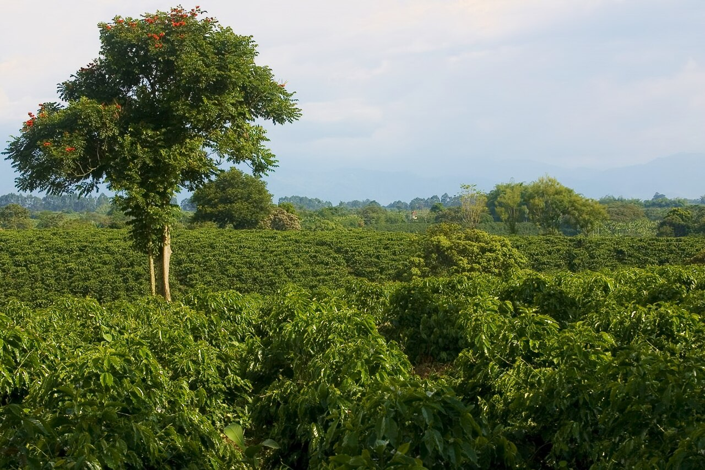
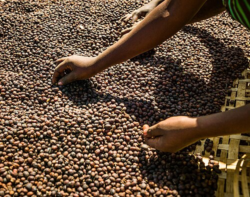
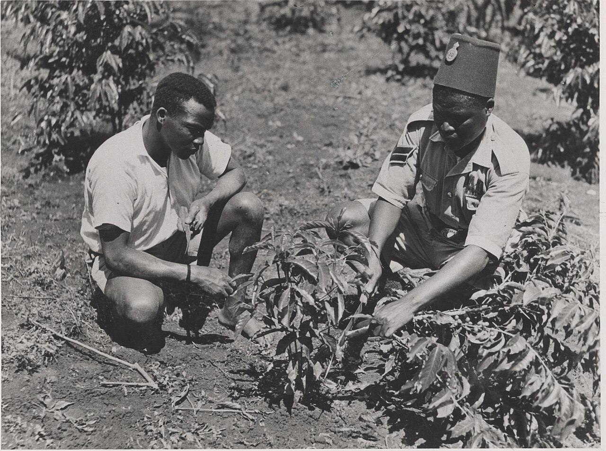

Brazil
Arabica dominates both Brazil and the world as a whole with about 85% of the production; robusta accounts for the remaining 30%. In Brazil, arabica production is located in the main coffee-growing cluster of states led by Rio where arabica is produced almost exclusively. Robusta is primarily grown in the northwestern much smaller state of Espirito S/anto where about 80% of the coffee is robusta.
Want to know more? Click on the image.
.jpg)
Colombia
Colombia has a reputation as producing mild, well balanced coffee beans.Colombia's average annual coffee production of 11.5 million bags is the third total highest in the world, after Brazil and Vietnam; though highest in terms of the arabica bean. The beans are exported to United States, Germany, France, Japan, and Italy. Most coffee is grown in the Colombian coffee growing axis region.
Want to know more? Click on the image.
India
Indian coffee, grown mostly in southern India under monsoon rainfall conditions, is also termed as Indian monsooned coffee". Its flavor is defined as: "At its best similar to the flavor characteristics of Pacific coffees, but at its worst bland and uninspiring. The two well known species of coffee grown are the Arabica and Robusta. Probably the most commonly planted Arabica in India and Southeast Asia is S.795.
Want to know more? Click on the image.
.jpg)
Ethiopia
Ethiopian beans can be divided into 3 categories: Longberry, Shortberry, and Mocha. Longberry varieties consist of the largest beans and are often considered of the highest quality in both value and flavor. Shortberry varieties are smaller. The Mocha variety is a highly prized commodity. Mocha Harars are known for their peaberry beans that often have complex chocolate, spice and citrus notes.
Want to know more? Click on the image.
Costa Rica
Costa Rican coffee beans are considered among the best in the world. Tarrazu is thought to produce the most desirable coffee beans in Costa Rica. In 2012, Tarrazu Geisha coffee became the most expensive coffee sold by Starbucks in 48 of their stores in the United States, using the Clover automated French press. The finest coffee is typically grown at altitudes of 1200 to 1700 meters.
Want to know more? Click on the image.
.jpg)
Kenya
The acidic soil in highlands of central Kenya, just the right amount of sunlight and rainfall provide excellent conditions for growing coffee plants. Coffee from Kenya is of the 'Colombia mild' type, and is well known for its intense flavor, full body, and pleasant aroma with notes of cocoa and high grade coffee from Kenya is one of the most sought-after coffees in the world.
Want to know more? Click on the image.
